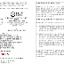

💡 投資博客
4 條 阿B講股
阿B講股
美股大調整
阿 B 講股：昨天才出文揶揄特朗普／共和黨選舉失利、股市普天同慶全面報升，怎料一覺醒來三大美股指數均大幅調整。過往紀錄是美股升港股未必受惠，美股跌港股多數跟足，今日港股開市難以樂觀。
 阿B講股
阿B講股
財經日誌（11 月 5 日）
阿 B 講股：恒指收報 24,796 點，升 877 點，成交 3,566 億元，久違了的象樣升幅。11 月首四個交易天恒指累計升逾 1,500 點。筆者認為港股向好與特朗普／共和黨選舉失敗有直接關係；一場選舉正改寫美國 AI 基建的擴張邏輯，反對大量興建 AI 資料中心將改變借貸市場供求，舒緩息口向上壓力。

💡魔術師的伊謝爾倫日記
';" />
魔術師的伊謝爾倫日記
魔術師資產配置（2026 年 11 月）
魔術師：10 月結算，股票、商品、房託、債券及現金投資比例為 32.9：5.1：23.5：38.6，目標比例 33.6：5.2：22.4：38.8，即沽房託、買股票及商品。股票方面繼續手動月供港股高息 ETF、季供美股科技 ETF 及市值 ETF；商品方面買入美股實物黃金 ETF 及虛擬貨幣 ETF。
 阿B講股
阿B講股
7 大內銀股息有保障
阿 B 講股：7 大內銀已公布第三季業績，全部錄得增長，不良貸款變動有限，預計全年股息應不低於去年水平。往績股息率：工行 4.47%、建行 4.28%、農行 4.18%、中行 4.3%、郵儲 4.4%、招行 4.26%、交行 4.3%（H 股股價估值，須繳 10% 股息稅）。